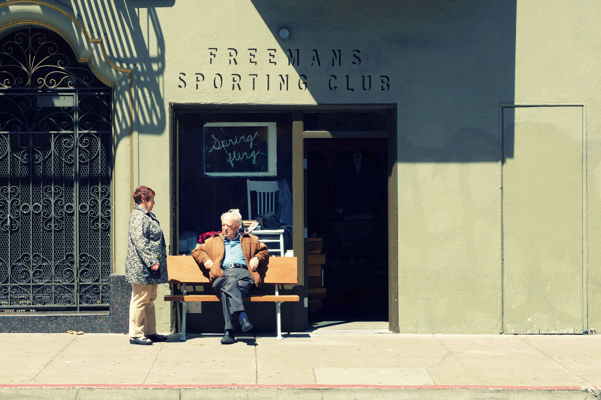
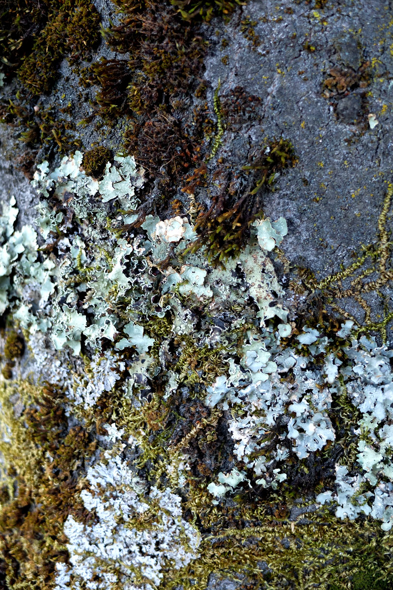

Travel & Reflection
01 January 2013
The start of a new Journey
After returning from California, I felt inspired to jumpstart a new site. This is the first article of images and experiences.
Coming back from any significant trip leaves me with a residual sense of wonder. The experiences, sights and people leave an impressionable mark. Theres a feeling of new discovery and possibilities - that today I will look at the world with the freshness of perspective that everyday deserves. Today I am a traveller.

